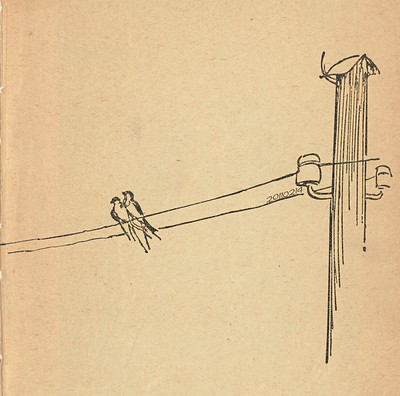
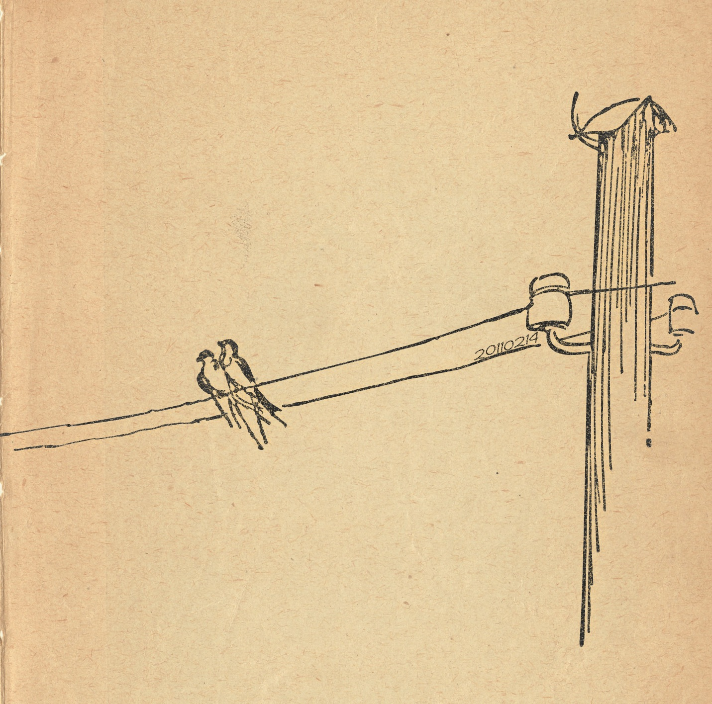
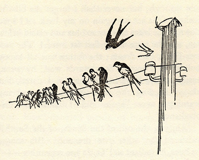
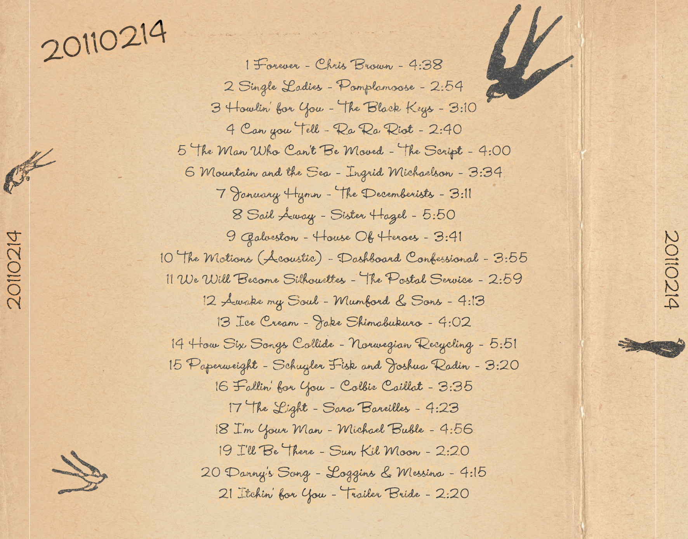

20110214

I've been quiet on my blog. I blame Twitter. I'm not sure I've ever waited four months to finally tell everybody about a new mix for Mary. This time I did it accidentally (I'll explain). Much like the other mixes I made for Mary, I wanted to share with each of you. Maybe you'll find a song or two you enjoy. I gave it to her on Valentine's Day this year, and managed to surprise her yet again with a mix. It took a lot of effort on my part to not let her see it (at the time our computer was in the most public place possible, which provided very little warning that she'd walk around the corner and see me working on it).
Before I get into the details about the artwork, I'll give you the track list:
| Track | Title | Artist | Duration |
|---|---|---|---|
| 01 | Forever | Chris Brown | 4:38 |
| 02 | Single Ladies | Pomplamoose | 2:54 |
| 03 | Howlin' for You | The Black Keys | 3:10 |
| 04 | Can You Tell | Ra Ra Riot | 2:40 |
| 05 | The Man Who Can't Be Moved | The Script | 3:59 |
| 06 | Mountain And The Sea | Ingrid Michaelson | 3:34 |
| 07 | January Hymn | The Decemberists | 3:11 |
| 08 | Sail Away | Sister Hazel | 5:50 |
| 09 | Galveston | House Of Heroes | 3:41 |
| 10 | The Motions (Acoustic)] | Dashboard Confessional | 3:55 |
| 11 | We Will Become Silhouettes | The Shins | 2:59 |
| 12 | Awake My Soul | Mumford & Sons | 4:13 |
| 13 | Ice Cream | Jake Shimabukuro | 4:02 |
| 14 | How Six Songs Collide | Norwegian Recycling | 5:51 |
| 15 | Paperweight | Schuyler Fisk and Joshua Radin | 3:20 |
| 16 | Fallin' For You | Colbie Caillat | 3:35 |
| 17 | The Light | Sara Bareilles | 4:23 |
| 18 | I'm Your Man | Michael Buble | 4:56 |
| 19 | I'll Be There | Sun Kil Moon | 2:20 |
| 20 | Danny's Song | Loggins & Messina | 4:15 |
| 21 | Itchin' For You | Trailer Bride | 2:20 |
I generally don't offer much info about why I've selected the songs, but this time I'll say that my first song on this mix was song number seven (though I can't really explain why it inspired the mix).


As for the album artwork, its obvious that the main source of inspiration for it was from this illustration. Despite my efforts, I've been completely unable to find where it's originally from. I've tried everything I can think of (which means, looking through my web history, using any reverse image lookup services, and googling “birds on a wire” until my eyes ~~bled~~ got bored) and I haven't been able to find it again on the internet. I really wanted to (re)find the original before I posted this, but got bored of looking, and (consequently) forgot to post this mix. Obviously the image is a scan of a book (since you can faintly see the words on the back side of the page), but I'm not sure which site posted the scanned image. I'd love to know where it's from so I can give proper credit. Any help would be appreciated.
(Update 20241219: I was able to find the source of the image! It's from this collection of illustrations from The Wind in the Willows. See the original blog post about it here. (How did I find this so many years later? Going through my blog, and finding the image in the directory for the link to that blog.))

I wanted the whole album to appear old and hand-drawn. I meticulously re-drew every re-used element from the original artwork, so I could have it nice and crisp at a larger size. I'm sure a professional illustrator would laugh at my pen-tool skills, but I'm pleased I can get the job done., and obviously used them on the back. I loved the idea of the lone pair of birds on the front. Are they love birds? I have no clue (and honestly I doubt it), but we'll pretend they are. The old paper mask I applied is from Bittbox and the typeface is the versatile Wendy LP.
The single largest change in this album was the dropping of the “G2” from the title, like all the other mixes I've posted. Why stop? I felt it was time to move on (and because most other people were confused by the G2 to begin with). The mix is for my wonderful wife. I love her, and hope this meager musical menagerie helps to show that.
Update: With hindsight, the dropping of the "G2" was short-lived, and foolish. Retroactively, this is still called a G2, like the rest.